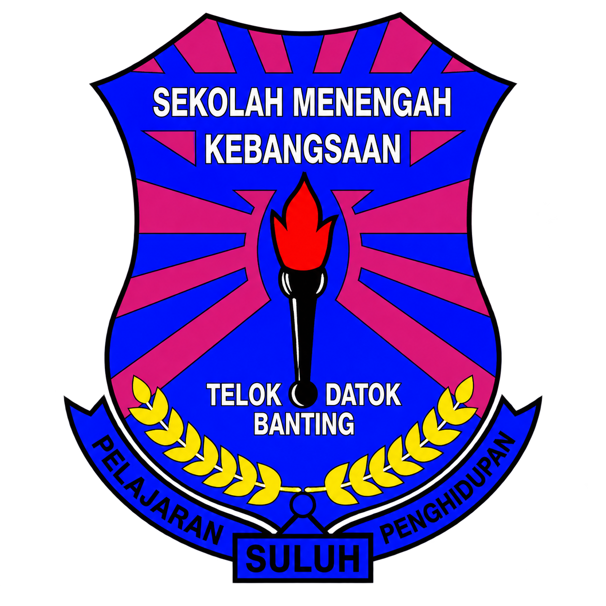

MAJLIS RASMI SEKOLAH

MENGUKIR KENANGAN · MENCIPTA MASA DEPAN
SENTUHAN ASPIRASI DIGITAL
MAJLIS GRADUASI 2026
SMK TELOK DATOK
SILA SENTUH BUTANG UNTUK MEMULAKAN GIMIK
SENTUHAN ASPIRASI DIGITAL
LANGKAH PERTAMA MENUJU ASPIRASI
TANDATANGAN PERASMI
Setiap kejayaan bermula dengan satu tekad.
PENGESAHAN PERASMIAN
✦
Ruang Tandatangan Digital
TANDATANGAN RASMI
Sila tandatangan di ruang ini menggunakan pen tablet atau jari.
BIOMETRIC AUTHENTICATION
SYS.2026 // ACTIVE
SCANNING...
BIOMETRIC ID: ASP-2026
MENUNGGU SENTUHAN PERASMI
DETIK MENUJU KEMUNCAK
BERSIAP SEDIA
10
MENYATUKAN HARAPAN
Satu langkah menuju seribu impian
DETIK BERSEJARAH · GENERASI GEMILANG
SMK TELOK DATOK
MAJLIS GRADUASI
2026
TAHNIAH KEPADA SEMUA GRADUAN
“Melangkah dengan ilmu, melakar masa depan dengan kejayaan.”
SATU SENTUHAN, SERIBU IMPIAN
MERAKAM KENANGAN · MENGHARGAI PERJUANGAN